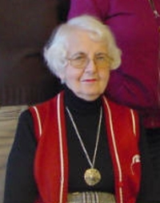

Virginia B. Bowers
Since 1986, Virginia Bowers has been the official historian of the city of Albany. Appointed by the mayor, the city historian is a municipal officer and public servant.
Virginia was also a great friend and long-standing supporter of the Colonial Albany Project. Having the good fortune to be able to call on her more than two decades of service as city historian, I am certain that she was the most knowledgeable person of her day on the history of Albany - particularly regarding the nineteenth and twentieth centuries. She took seriously the public historian's task of answering historical questions about the city of Albany and its people. She was a constant and positive presence at historical gatherings and a wonderful colleague. I thoroughly enjoyed our frequent chats.
Virginia Bowers was the author of a book entitled The Texture of a Neighborhood: Albany's South End, 1880-1940 - published in 1991. She has been the subject of a number of media articles and is often enlisted as a resource person.
A lifelong advocate for her beloved South End, Virginia Bowers died on December 30, 2007. She was a great friend and comrade-in-arms and will be sorely missed. She was eighty-four years young!
Virginia never entered the computer age - no e-mail, no website, no Internet presence. For me personally, that was part of her charm. She had a great and orderly mind and memory! However, I'm certain she would politely take exception to this profile. Gosh, I miss that charming lady!
Virginia Bowers was a life-long history lover! Rising through the banking community to become the first woman bank vice-president in Albany, she later pursued historical studies at the College of St. Rose where she received an MA in History and Political Science. Her book grew out of a thesis project. Virginia served on a number of boards of Albany historical and community-based organizations. A recent picture of her working with one of those local groups is available online. A www.google.com search reveals some of her many, recent contributions. See also an online guestbook. Her obituary appearing in the Times Union on January 1, 2008 follows:
Virginia B. Bowers Virginia B. Bowers, 84, died Sunday, December 30, 2007, at St. Peter's Hospital in Albany.Born in Hartford, Conn., she was the daughter of the late William and Caroline (Rehmer) Bowers. She was a graduate of Albany High School, Albany Business College and the College of St. Rose where she received her bachelor's and master's degrees. Miss Bowers also attended Russell Sage College and Siena College.
In 1942, she joined the staff of the National Commercial Bank and Trust Company where she worked in various clerk positions in the trust department. In 1969, Miss Bowers became the first woman in the city of Albany to be named vice president and trust officer at National Commercial Band and Trust Company. She retired in August 1983 to continue with college education.
Miss Bowers was the author of "The Texture of a Neighborhood - Albany's South End 1880-1940" which was published in 1991.
Her memberships included the Lutheran Church of the Holy Spirit, the board of Lutheran Theological Seminary at Philadelphia and it's finance committee, the United Way of Northeastern NY, the Friends of the Schuyler Mansion, the Albany Institute of History and Art, the College of St. Rose Alumni Ass'n., NY State Museum at Albany, the Friends of New Netherlands Society, the South End Historical Society, the Albany County Historical Society, the Association of Municipal Historians of N.Y. In 1979, Miss Bowers received an award for business at the first annual Tribute to Women given by the Albany YWCA. Also in 1979 she received the Albany Business College Civic Service Award.
In 1993, she was appointed historian for the city of Albany and in 1996 she was named Author of the Year by the Friends of the Albany Public Library. In 2005, Miss Bowers was nominated by Mayor Gerald Jennings to receive the 3rd Age Achievement Award in Arts and Culture sponsored by Senior Services of Albany.
She was predeceased by her sister, Marion Cure. Survivors include nieces, Joan Bowers, Deborah Heinmiller, Pamela (Robert) Deitz; nephew, Michael Bowers; and 10 grandnieces and nephews. Funeral services will be held Thursday at 10 a.m. in the Lutheran Church of the Holy Spirit. Relatives and friends are invited and may also call at the Daniel Keenan Funeral Home, 490 Delaware Ave., Albany, Wednesday from 4-8 p.m.
Interment will be held in the spring in Holy Sprit Lutheran Cemetery, Glenmont. In lieu of flowers, those who wish may send memorial contributions to the Lutheran Church of the Holy Spirit Memorial Fund, 57 Hurlbut St., Albany, NY 12209
Note this additiion: More detailed biography via Find-A-Grave; also The Virginia Bowers Memorial Sculpture